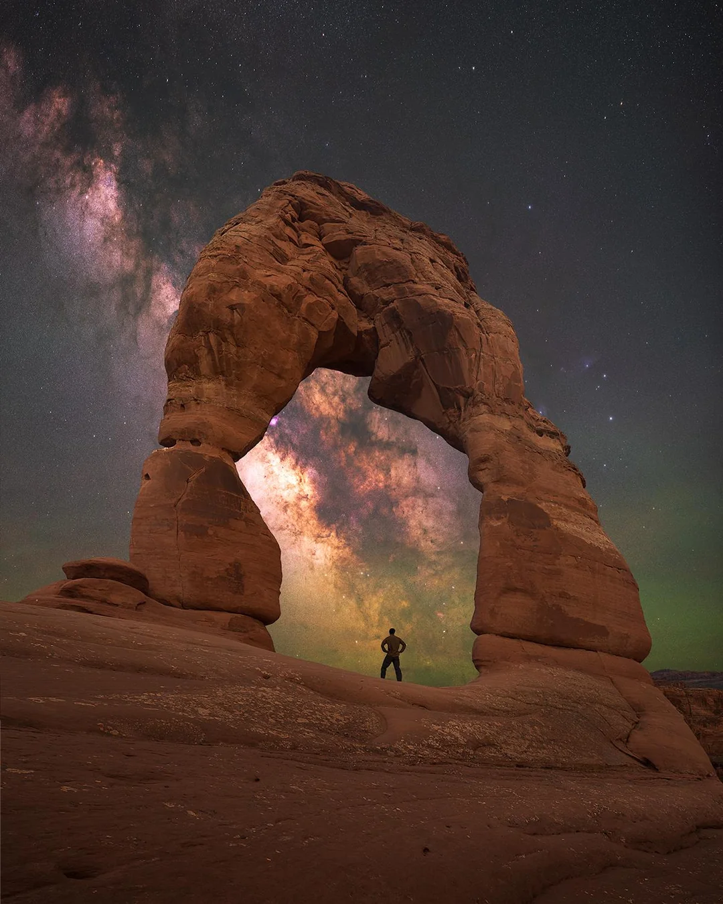
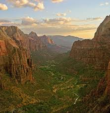
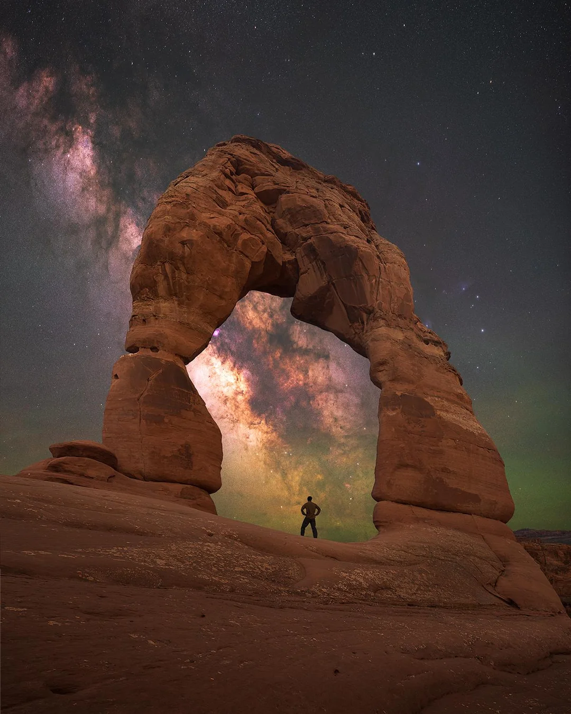
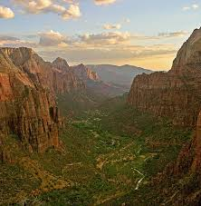

Arches National Park
Arches National Park is famous for its more than 2,000 natural stone arches, as well as soaring pinnacles and massive rock fins. The iconic Delicate Arch is a bucket-list destination, standing proudly against the backdrop of red rock deserts and distant mountain ranges. Popular hikes include the Devil's Garden Trail and the Windows Section, which showcase a variety of these formations up close. Visitors can also enjoy ranger-led programs that explore the park’s unique geology and history.
Bryce Canyon
Bryce Canyon National Park is a surreal wonderland of crimson-colored hoodoos—towering spires of rock formed by erosion over millennia. The park's amphitheaters, such as the Bryce Amphitheater, provide unforgettable panoramic views, especially at sunrise and sunset. Hikers flock to trails like the Queen’s Garden and Navajo Loop to immerse themselves in the maze of hoodoos. In addition, Bryce Canyon’s high elevation makes it one of the best places in the United States for stargazing, with pristine dark skies and minimal light pollution.Canyonlands National Park
Canyonlands National Park is a vast expanse of dramatic desert landscapes carved by the Colorado and Green Rivers. The park is divided into four districts: Island in the Sky, The Needles, The Maze, and the rivers themselves. Island in the Sky offers accessible viewpoints like Mesa Arch and Grand View Point, while The Needles district is perfect for adventurous hikers exploring its backcountry trails. River rafting and off-road driving are also popular ways to experience the park's rugged terrain.
Zion National Park
Zion National Park is Utah’s oldest national park and one of its most popular, thanks to its awe-inspiring sandstone cliffs and lush river valleys. Angel’s Landing, a challenging trail with steep switchbacks and sheer drop-offs, is a highlight for thrill-seekers, while The Narrows offers a unique hiking experience wading through the Virgin River. Zion’s combination of towering cliffs and vibrant vegetation creates a stunning contrast that draws millions of visitors every year, making it a paradise for hikers, photographers, and climbers.
Check this website for alerts and closures for Zion National ParkCapitol Reef
Finally, Capitol Reef National Park is often less crowded but no less impressive, featuring a striking Waterpocket Fold—a 100-mile-long wrinkle in the Earth’s crust. The park offers scenic drives, ancient petroglyphs, and orchards where visitors can pick fresh fruit. Popular hikes include the Cassidy Arch Trail and the Grand Wash, which take visitors through colorful canyons and past dramatic rock formations. Capitol Reef’s relative solitude makes it a perfect destination for those seeking tranquility and a closer connection to nature.